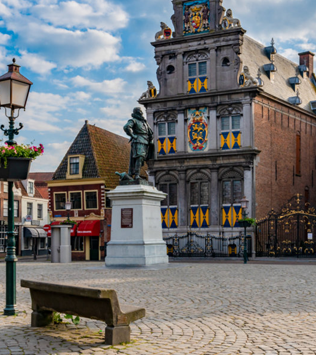
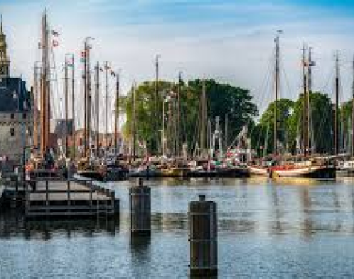
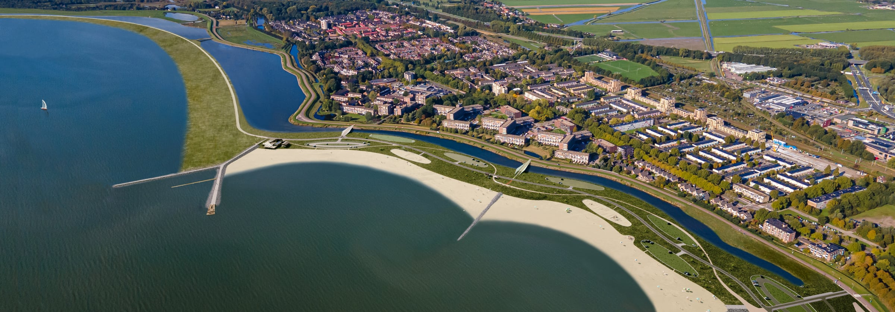
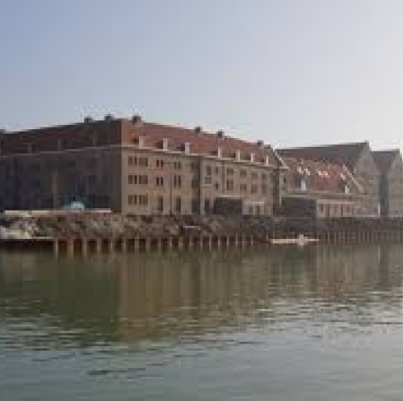
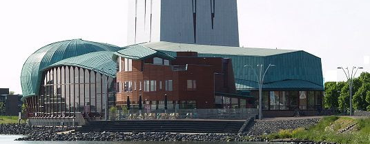

Het Westfries Museum
This museum takes you back to the Golden Age and shows the rich history of Hoorn and West Friesland. It is located in a monumental building on the Roode Steen and has a beautiful collection of paintings, silverware and archaeological finds. Location: Roode Steen 1 Price: €12.50 for adults, children under 18 free.

Oude Haven
An attractive place in the heart of Hoorn, where you can walk past historic ships and enjoy the view of the water. It is an important place full of maritime history. Location: Hoorn Price: Free to visit.

Stadsstrand Hoorn
A recently constructed beach on the IJsselmeer, where you can relax, swim or walk. It is a popular spot on warm days and offers a beautiful view over the water. Location: Schelphoek Price: Free to visit.

Museum van de 20e Eeuw
This museum offers a nostalgic journey through the 20th century with exhibits on everyday objects, toys, fashion and technology from that era. It is a fun and interactive museum for young and old. Location: Krententuin 24 Price: €10 for adults, €5 for children.

Schouwburg Het Park
This modern theater offers a varied program of plays, concerts, musicals and other performances. It is beautifully situated on the water, with a terrace where you can enjoy the view. Location: Westerdijk 4 Price: Ticket prices between €20 and €50.
